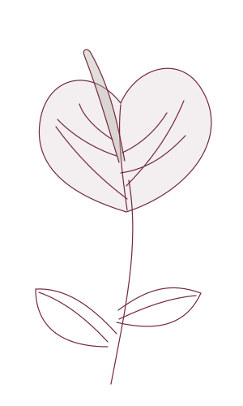
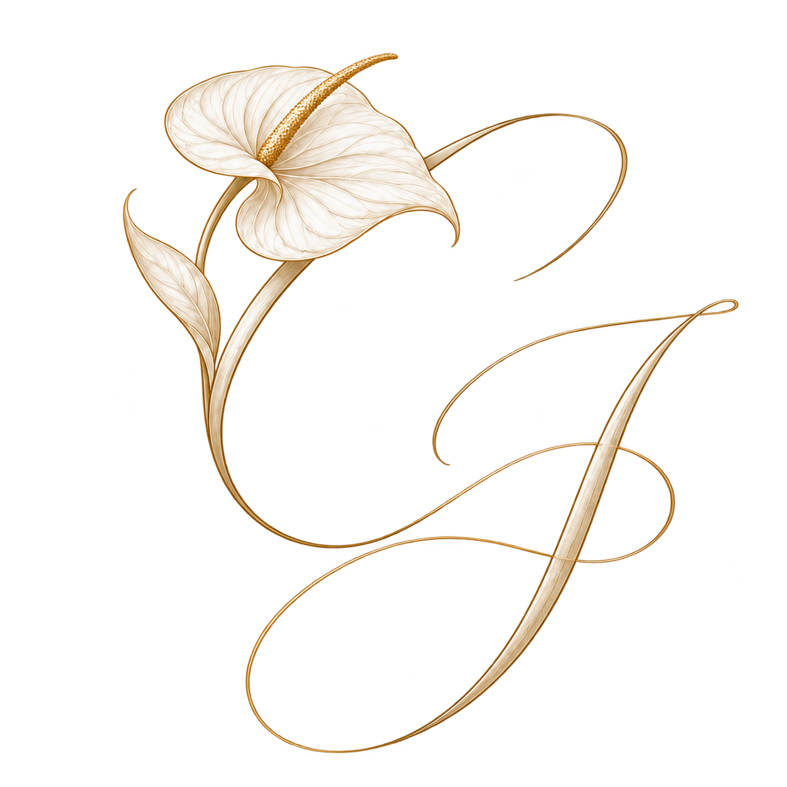
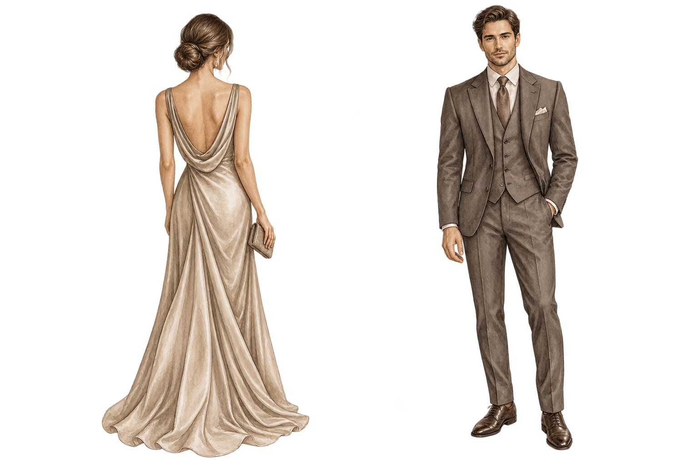

Con amor, los invitamos a nuestra boda

Una historia que continúa
Claudia & Jorge
12 · 12 · 2026
ANCPCPP · Lima, Perú
Descubre nuestra historia↓Algunas historias siempre fueron reales
Entre tantas casualidades,
hubo una que
lo cambió todo.
Diez años después,
nuestra historia continúa.
El escenario
de nuestro sí.
Un lugar para encontrarnos.
Un recuerdo para siempre.
El escenario de nuestro sí
ANCPCPP · LimaSábado 12 de diciembre de 2026
4:00 p. m.
Ceremonia religiosa
5:00 p. m.
Ceremonia civil
6:00 p. m.
Inicio de la fiesta
Un lugar lleno de historia,
para el inicio de la nuestra.
ANCPCPP
Asociación Nacional de Criadores y Propietarios
de Caballos Peruanos de Paso
Compartiremos la ubicación exacta próximamente.
Dress code
Elegante
Nos encantaría verlos
en los tonos que inspiran
nuestra celebración.
Tonos sugeridos, a tu elección.

Mujeres
Vestido largo
o midi elegante.
Hombres
Traje en tonos
neutros.
Evitar blanco, ivory y burgundy.
El mejor regalo será
compartir este día
con nosotros.
Un lugar especial
para ti.
Hemos reservado
2Lugares
Para compartir esta celebración con nosotros.
¿Nos acompañas
a escribir este capítulo?
Modo demostración · Los datos son de ejemplo. No se guardan ni se envían confirmaciones.